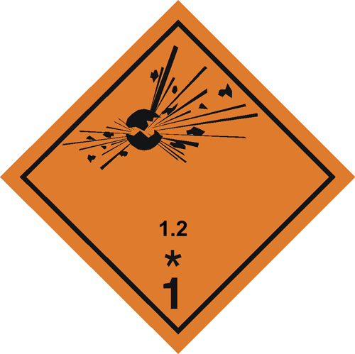
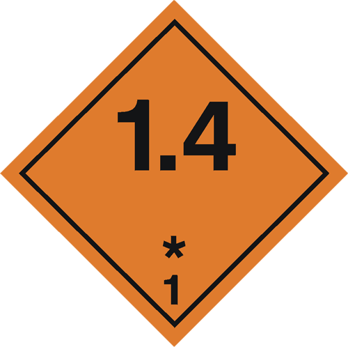
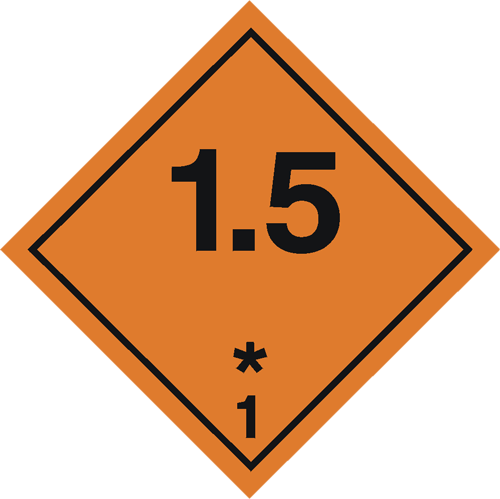
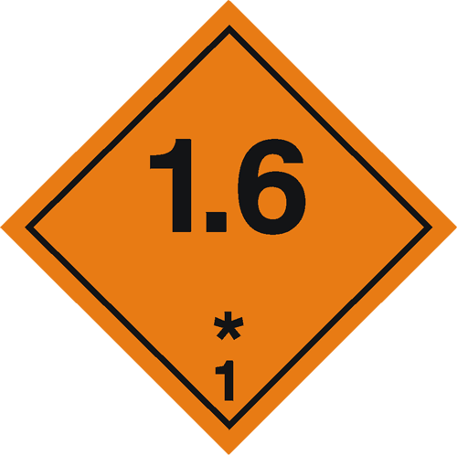

CLASSIFICATION OF DANGEROUS GOODS
The International Maritime Dangerous Goods (IMDG) Code was developed as a uniform international code for the transport of dangerous goods by sea covering such matters as packing, container traffic and stowage, with particular reference to the segregation of incompatible substances.
The Carriage of dangerous goods and marine pollutants in sea-going ships is respectively regulated in the International Convention for the Safety of the Life at Sea (SOLAS) and the International Convention for the Prevention of pollution from Ships (MARPOL).
Relevant parts of both SOLAS and MARPOL have been worked out in great detail and are included in the International Maritime Dangerous Goods (IMDG) Code, thus making this Code the legal instrument for maritime transport of dangerous goods and marine pollutants. As of 1st January 2004, the IMDG Code has become a mandatory requirement.
For all modes of transport (sea, air, rail, road and inland waterways) the classification (grouping) of dangerous goods, by type of risk involved, has been drawn up by the UNITED NATIONS Committee of Experts on the Transport of Dangerous Goods (UN).
Hazardous Substances Vs Dangerous goods
Hazardous Substances have the potential to harm human health. They may be solids, liquids or gases; they may be pure substances or mixtures.
Hazardous substances may cause immediate or long-term health effects. Exposure could result in:
- poisoning;
- irritation;
- chemical burns;
- sensitisation;
- cancer;
- birth defects; or
- diseases of certain organs such as the skin, lungs, liver, kidneys and nervous system.
Dangerous goods are substances that may be corrosive, flammable, explosive, spontaneously combustible, toxic, oxidising, or water-reactive. These goods can be deadly and can seriously injure or kill people, damage property and the environment.
| GOODS NATURE | UN CLASS | SUB - CLASS | SYMBOL |
|---|---|---|---|
| Explosives | Class 1 | 1.1: Explosives with a mass explosion hazard |
|
| 1.2: Explosives with a severe projection hazard |
 | ||
| 1.3: Explosives with a fire |
 |
||
| 1.4: Minor fire or projection hazard |
 | ||
| 1.5: An insensitive substance with a mass explosion hazard |
 | ||
| 1.6: Extremely insensitive articles |
 | ||
| Gases | Class 2 | 2.1 Flammable Gases |
 |
| 2.2 Non-Flammable,non-toxic gases |
 |
||
| 2.3 Toxic (Poisonous) Gases |
 |
||
| Flammable Liquids |
Class 3 | NO SUB - CLASS |  |
| Flammable Solids or Substances | Class 4 | 4.1: Flammable solids |
 |
| 4.2: Self-reactive substances |
 |
||
| 4.3: Solid desensitized explosives |
 |
||
| 4.4: Polymerizing substances and mixtures (stabilized) |
|||
| 4.5: Substances liable to spontaneous combustion |
|||
| 4.6: Comprises |
|||
| 4.7: Substances which, in contact with water, emit flammable gases |
|||
| Oxidising substances and Organic peroxides | Class 5 | 5.1: Oxidizing substances |
 |
| 5.2: Organic peroxides |
 |
||
| Toxic Substances | Class 6 | 6.1 Toxic Substances |
 |
| 6.2 Infectious Substances |
 |
||
| Radioactive Material |
Class 7 | NO SUB - CLASS |  |
| Corrosive Substances |
Class 8 | NO SUB - CLASS |  |
| Miscellaneous Dangerous Goods |
Class 9 | NO SUB - CLASS |  |